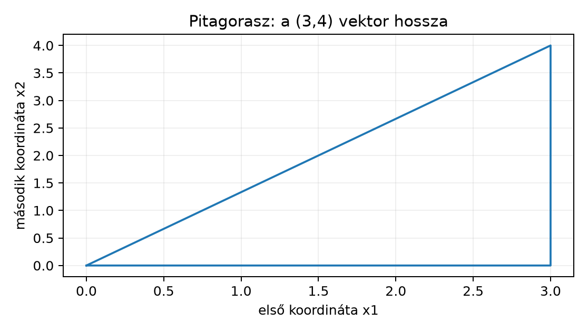

A Northstar orders.csv táblájában minden rendeléshez
több, a rendelés pillanatában ismert numerikus jellemző tartozik:
distance_km (km), priority_flag (0/1 jelző),
basket_minor (EUR-cent) és quantity_sum
(darab). Amikor később hasonlósági modellt, legközelebbi szomszéd
keresést vagy klaszterezést építünk, egy kérdés mindig előkerül:
mennyire „van közel” két rendelés a feature-térben?
A feladat most kifejezetten ez: adott két rendelés,
distance_km=20, priority_flag=0,
basket_minor=4500, quantity_sum=3distance_km=120, priority_flag=1,
basket_minor=15000, quantity_sum=6és azt vizsgáljuk, mekkora a köztük lévő távolság, illetve hogy az
egyes koordináták mennyire járulnak hozzá. Az output nem egyetlen szám
lesz, hanem egy távolság és egy hozzájárulás-elemzés. A megfigyelési
egység a rendelés, a négy koordináta a megfigyelt numerikus jellemző. Az
induló becslésem: a nyers euklideszi távolságot szinte teljesen a
basket_minor uralja, mert a kosáreltérés
,
míg a többi koordináta eltérése legfeljebb
.
Ezt a sejtést a szakasz végén invariánssal ellenőrizzük: a
kosárkoordináta négyzetes hozzájárulása várhatóan
fölött lesz.
A vektor (vector) adattudományi jelentése: egy megfigyelés numerikus jellemzőinek rendezett listája. A koordinátájú vektort
alakban írom. A
értelmezési tartománya a feature-től függ; a distance_km
például nemnegatív valós szám km-ben, a priority_flag
viszont csak
vagy
.
A NumPy-ban ugyanezt np.array adja, (p,)
shape-szel, általában float64 dtype-tal. A matematikai
jelölés
-től
indexel, a NumPy
-tól:
a képletben szereplő
a kódban x[i-1].
A feature-tér (feature space) az összes lehetséges koordináta-kombináció halmaza, itt . Minden rendelés egy pont ebben a térben. A gondot a mértékegység okozza: a tengelyek nem összehasonlítható skálájúak. A pontok geometriai távolsága ezért nem magától értetődő, hanem egy döntés következménye; a későbbi modellekben is ugyanez a választás tér vissza.
Két koordinátán a vektor hosszát a Pitagorasz-tétel adja. Az vektor esetén a hossz
A vektor a síkon a pontból a pontba mutató irányított szakasz; a hossza az átfogó, a derékszögű befogók hossza és .

A két befogó a koordinátatengelyekkel párhuzamos, ezért a négyzetösszeg pontosan a két oldalnégyzet összege. A dimenziós általánosítás ugyanez koordinátánként: minden egy derékszögű összetevő.
A skaláris szorzat (dot product) két azonos hosszúságú vektorból készít skalárt:
A jelölések: és egyaránt shape-ű vektor; a kimenet egyetlen skalár. A mértékegység vegyes lehet: ha a koordináták eltérő mennyiségek, akkor a szorzatok dimenziója sem egységes, tehát a kapott skalár nem hordoz közvetlen fizikai jelentést. Ezt a figyelmeztetést a távolságnál is meg kell ismételni.
Kézi kontroll: , esetén
A művelet két alapvető tulajdonsága: szimmetrikus, azaz
,
és mindkét változójában lineáris. A NumPy-beli megfelelője
np.dot(x, y).
Az euklideszi norma (Euclidean norm) a vektor hossza az origótól:
A
-es
index a „négyzetes” definícióra utal; a NumPy
np.linalg.norm(x) hívása alapértelmezésben ugyanezt
számolja. A norma tulajdonságai: nemnegatív, csak a nullvektorra
,
és pozitív skalárral szorozva a hossz ugyanazzal a skalárral szorzódik.
A távolság két pont között a különbségvektor
normája:
A fenti kis példában , ezért
Ha a koordináták mértékegysége eltérő, a négyzetösszeg tagjai eltérő mértékegységűek: , dimenziótlan, és kerülne egymás mellé. A matematikai számolás mindig elvégezhető, de a kapott értéket „távolságnak” nevezni csak akkor van értelme, ha a koordinátákat előzőleg közös, dimenziótlan skálára hozzuk.
A koszinusz-hasonlóság (cosine similarity) a skaláris szorzatot a hosszak szorzatával normálja:
A kimenet dimenziótlan, és a tartományba esik, ha egyik vektor sem nullvektor. Az érték , ha a két vektor azonos irányú, , ha merőleges, , ha ellentétes irányú. Ez nem távolság, hanem irány szerinti hasonlóság: a és a vektor koszinusza , pedig a hosszuk eltér. A példabeli és esetén
A hasonlóság magas; a két háromkoordinátás vektor iránya közel van, hosszaik közötti különbség viszont a koszinuszban nem jelenik meg.
A standardizálás (standardization) minden koordinátát ugyanazzal a transzformációval dimenziótlanít. Ha a feature elvárt értéke , szórása , akkor
A vektor minden koordinátája dimenziótlan; a mértékegysége megegyezik mértékegységével, így a hányadosnak már nincs mértékegysége. A linearitás miatt a standardizált érték nem változik, ha az adott coordinatat pozitív skalárral átskálázzuk: a és ugyanazzal a skalárral szorzódik, a hányados pedig ugyanaz marad. Ez a későbbiekben fontos ellenőrző eszköz: ha egy távolságalapú modell válasza megváltozik pusztán attól, hogy kilométer helyett méterben adjuk meg a távolságot, akkor a modell nem standardizált.
A skálázás azonban nem semleges, ahogy a Stabil numerika és érzékenység alfejezetben láttuk: egy másik skála más távolságot és más modelljelentést ad. A skálázási statisztikákat is csak abból az adatrészből szabad becsülni, amelyből a modell tanul, nem a teljes adatból; ez a későbbi szivárgásmentes pipeline egyik központi szabálya lesz.
Az alábbi kód a két Northstar-példarendelés vektorából számol nyers
távolságot, majd egy megadott referencia-statisztikával standardizál. A
statisztikák itt szemléltető értékek, nem a mellékelt
orders.csv futtatási eredményei.
import numpy as np
order_a = np.array([20.0, 0.0, 4500.0, 3.0]) # distance_km, priority_flag, basket_minor, quantity_sum
order_b = np.array([120.0, 1.0, 15000.0, 6.0])
diff = order_a - order_b
raw_distance = np.linalg.norm(diff)
print("nyers távolság:", raw_distance) # szemléltető várt érték: kb. 10500.48
# Referencia-statisztikák a teljes tanító adatból számolandók; itt szemléltető értékek.
mu = np.array([80.0, 0.5, 12000.0, 4.0])
sigma = np.array([40.0, 0.5, 6000.0, 2.0])
z_a = (order_a - mu) / sigma
z_b = (order_b - mu) / sigma
scaled_distance = np.linalg.norm(z_a - z_b)
print("standardizált távolság:", scaled_distance) # szemléltető várt érték: kb. 3.9449
contrib_raw = (diff ** 2) / (raw_distance ** 2)
contrib_scaled = ((z_a - z_b) ** 2) / (scaled_distance ** 2)
print("nyers négyzetes hozzájárulás:", contrib_raw)
print("standardizált hozzájárulás:", contrib_scaled)A könyv készítésekor a kódot nem futtattam; a megadott értékek kézi
ellenőrzésből származó elméletileg várt kimenetek. A saját
lab/orders.csv betöltéséhez a teljes projektfüggő utat kell
használni, például:
import pandas as pd
orders = pd.read_csv("orders.csv", parse_dates=["order_ts"])
print(orders[["distance_km", "priority_flag", "basket_minor", "quantity_sum"]].head(2))Ha a laborfájl a telepítés helyén más mappában van, a
lab/ relatív útvonalat kell használni; a pontos utat a Kérdés, célváltozó és döntési helyzet alfejezetben
rögzített projektgyökérhez viszonyítva érdemes kezelni.
A nyers A–B távolságot a basket_minor eltérése uralja: a
különbség
,
a négyzete
,
ami a
teljes négyzetösszeg
-a.
A távolság közel
,
tehát a többi jellemző gyakorlatilag láthatatlan. Ez a távolságazon
alapuló modell torzítását okozná: a kosárérték határozná meg, hogy mely
rendelések számítanak hasonlónak.
A standardizálás után a koordináták dimenziótlanok és összehasonlíthatók. A z-vektorok:
A különbség négyzetösszege
,
a távolság kerekítve
.
A négyzetes hozzájárulások most nagyjából
,
,
és
.
A kép már nem egyetlen feature-ről szól; a kosárérték fontos marad, de
nem egyedüli döntő. Az ellenőrzést akkor tekinthetjük helyesnek, ha a
hozzájárulások összege
,
és a saját kézi Pitagorasz-összegünk a NumPy-eredménnyel
relatív tűrésen belül egyezik; a shape mindkét távolságnál skalár, a
dtype np.float64.
1. Értelmezés. Vezesd le a
esetet. Mi a np.linalg.norm(x) eredménye, ha
x = np.array([-5.0])? Mi lesz a két
koordinátás vektor,
és
távolsága? Fogalmazd meg, mit jelent itt a standardizálás z-értéke.
2. Implementálás. Saját Python-függvénnyel,
numpy.dot és numpy.linalg.norm használata
nélkül, csak beépített sum-mal és
math.sqrt-tal írd meg a dot(a,b),
norm(a) és cosine(a,b) függvényeket.
Ellenőrizd az
,
példából ismert eredményeket
tűréssel.
3. Hibakeresés. Az alábbi koszinusz-számítás miért
hibás, ha x és y nem merőlegesek?
cosine = np.dot(x, y) / np.linalg.norm(x) * np.linalg.norm(y)Javítsd ki, és állítsd elő azt az x–y párt
is, ahol a hibás képlet véletlenül mégis helyes eredményt ad.
4. Megváltozott feltétel. Ugyanaz a két rendelés, de
a distance_km értékét méterre váltjuk: A távolsága
m, B-é
m lesz; a többi koordináta változatlan. Számold ki a nyers távolságot az
új vektorokkal, majd számold ki a standardizált távolságot a megfelelő
méterre átváltott
m és
m statisztikákkal. Milyen következtetést von le ez a
skálainvarianciáról?
1.
esetén a vektor egyetlen szám. A norma képlete
,
tehát np.linalg.norm(np.array([-5.0])) eredménye
.
A távolság
.
Ha az egyetlen feature elvárt értéke
és szórása
,
akkor
egy dimenziótlan normalizált koordináta: azt mondja meg, hány szórással
van
a középérték felett vagy alatt.
2.
import math
def dot(a, b):
return sum(ai * bi for ai, bi in zip(a, b))
def norm(a):
return math.sqrt(sum(ai * ai for ai in a))
def cosine(a, b):
return dot(a, b) / (norm(a) * norm(b))
a = [1, 2, 3]
b = [4, 5, 6]
print(dot(a, b), norm(a), cosine(a, b)) # szemléltető: 32, 3.7416..., 0.9746...Az invariant az ismert kézi értékekkel való egyezés: dot
,
norm
,
a koszinusz
.
Ha a hányadost abs(ertek - elvart) < 1e-12 szűrésű
tesztben használjuk, a függvények helyesen működnek.
3. A Python kiértékelési sorrendje miatt a képlet valójában
lesz, tehát a második normával szoroz, nem oszt. A helyes alak:
cosine = np.dot(x, y) / (np.linalg.norm(x) * np.linalg.norm(y))A hibás képlet akkor adhat véletlenül jó értéket, ha , mert akkor a szorzás és az osztás eredménye ugyanaz a hányados marad. Például és esetén a helyes koszinusz , a hibás kifejezés is . Ez az egybeesés inverz irányban is mutatja, miért nem elég egyetlen tesztpár.
4. A méterre váltott nyers eltérés:
négyzetösszege
,
a távolság kerekítve
.
A distance_km most
fölött uralja az eredményt, pedig a fizikai helyzet nem változott. A
standardizált érték ellenben ugyanaz:
A standardizált távolság a korábbi marad. A standardizálás tehát eltünteti a pozitív lineáris mértékegység-átskálázás hatását; a nyers euklideszi távolság nem invariáns rá.
A leggyakoribb tévedés az, hogy a nyers euklideszi távolságot skálázás nélkül „objektív hasonlóságnak” tekintjük. A fenti A–B példa az ellenpélda: kilométer helyett méterben megadva a távolság nagyságrendet ugrik, és a döntés egyetlen, önkényesen nagyobb számokban mért dimenzióra szűkül. A nagyobb numerikus egységű feature minden statisztikai hiba nélkül is dominál, mert a négyzetes büntetés nem ismeri a mértékegységet. Az önellenőrzés egyszerű: számítsd ki a hozzájárulásokat, és kérdezd meg, szeretnél-e modellt ezzel a nyers mércével. Ha a hozzájárulások fölött koncentrálódnak egyetlen koordinátára, az ritkán a tényleges jelentőséget mutatja, inkább skálaproblémát.
A másik félreértés a koszinusz-hasonlóságot távolságnak hívja. A koszinusz a hosszt elfelejti, és nem teljesíti a távolság nulla-feltételét: az és vektorok hasonlósága , pedig a pontok nem esnek egybe. A Kérdés, célváltozó és döntési helyzet alfejezetből ismert elv szerint a mértéket ahhoz a döntéshez kell kötni, amelyet a modell később támogat.
Különböző mértékegységű változók euklideszi távolságát megfelelő skálázás nélkül könnyű félreértelmezni. A skálázáshoz szükséges paramétereket a tanítóhalmazból becsüljük, ne a validációs vagy tesztadatból.
A vektor az adattudományban egy megfigyelés rendezett numerikus jellemző-listája, a távolság pedig a különbségvektor euklideszi normája. A skaláris szorzat a koordinátaszorzatok összege, a koszinusz-hasonlóság irány szerint hasonlít, de nem távolság. A különböző mértékegységű koordináták négyzetes összegzése félrevezető; a standardizálás dimenziótlan közös skálát ad, és pozitív lineáris mértékegység-átskálázásra invariáns. A Northstar-példában a nyers távolságot -ban a kosárérték uralta, a standardizálás után a hozzájárulások kiegyensúlyozottabbak lettek. A következő alkalmazás a Mátrixszorzás és lineáris transzformáció mátrixszorzás, amely ezekből a koordinátánkénti műveletekből építi fel a lineáris transzformációkat.